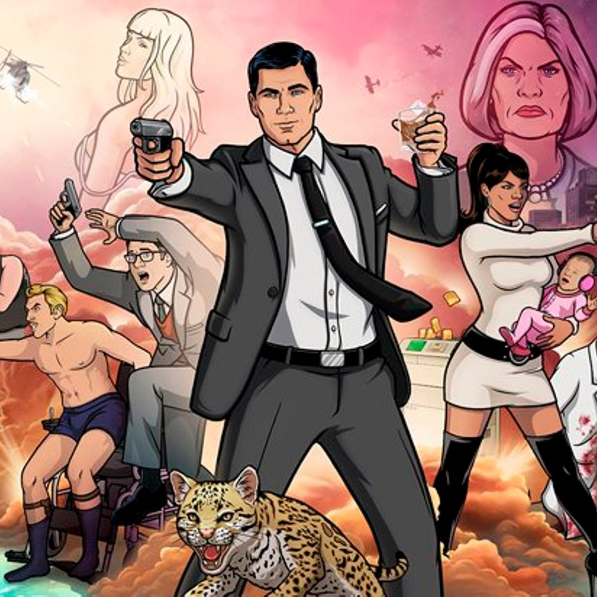

About Archer
Archer is the worlds deadliest secret agent. He works for the International Secret Intelligence Service (ISIS) based in Ney York. He often gets himself into wild antics during his adventures and frequently goes by the pseudonym Randy.
Archer and his friends
Archer Characteristics
- He always has a drink in hand
- He is a badass super secret agent
- He is in love with Lana
Archer's Friends
Archer has a dysfunctional group of friends that travel the world and fight bad guys or anyone that gets in their way.Click on the links below to read more about them: